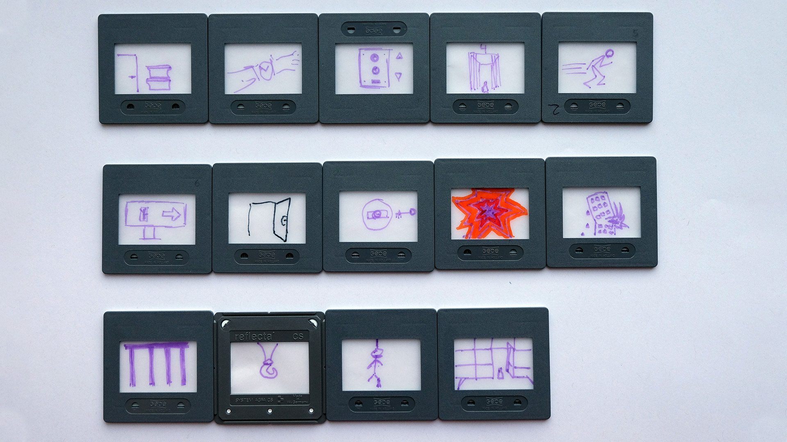
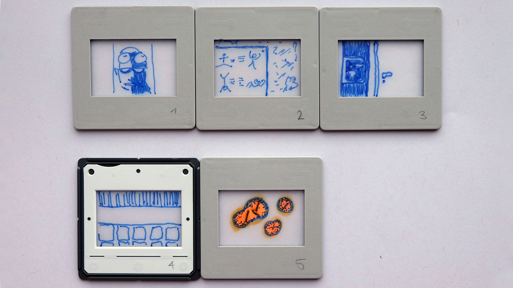
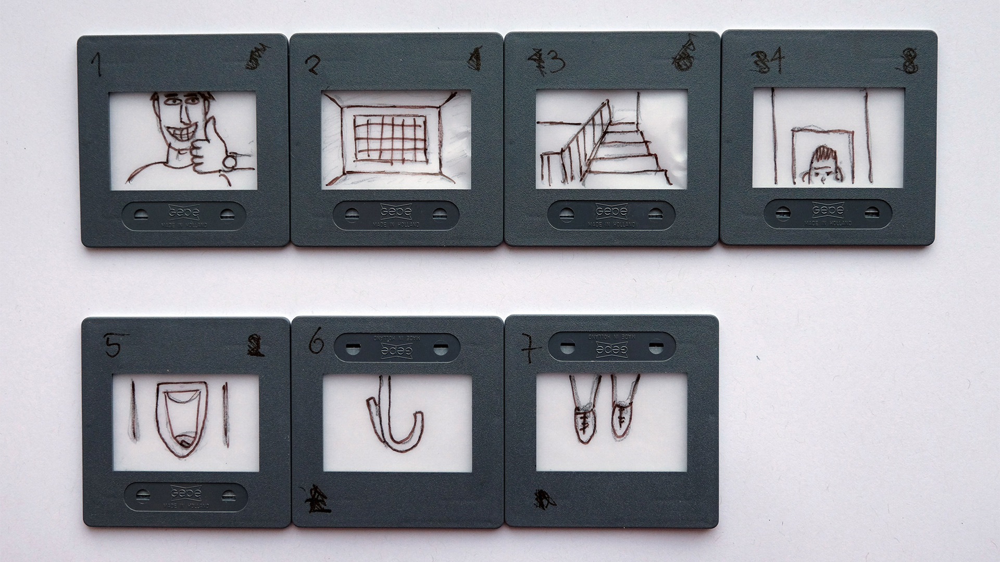
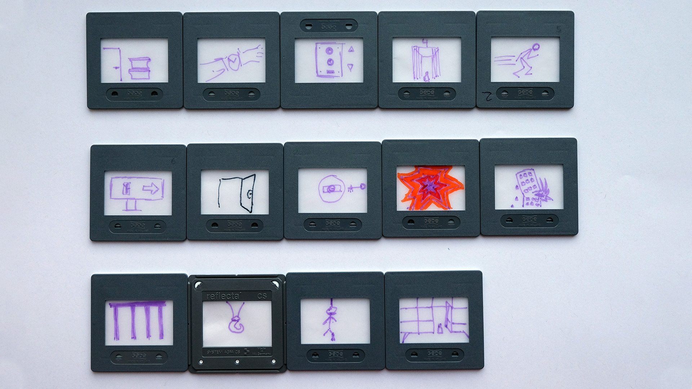
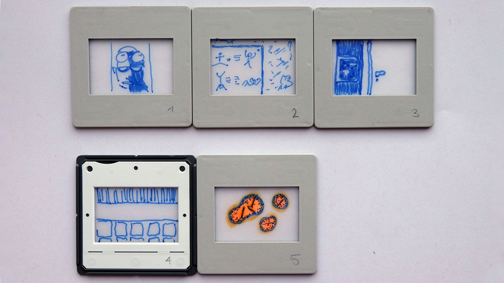
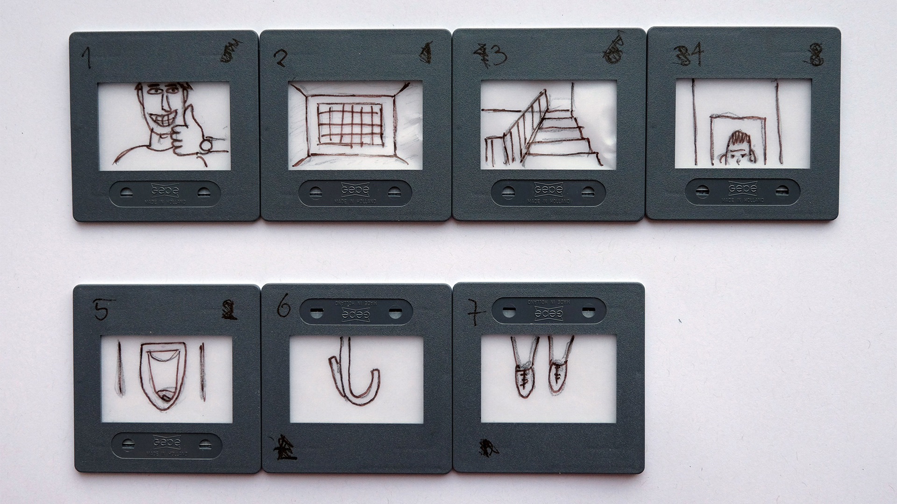
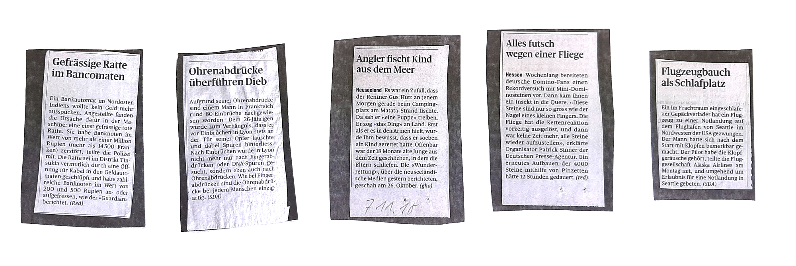
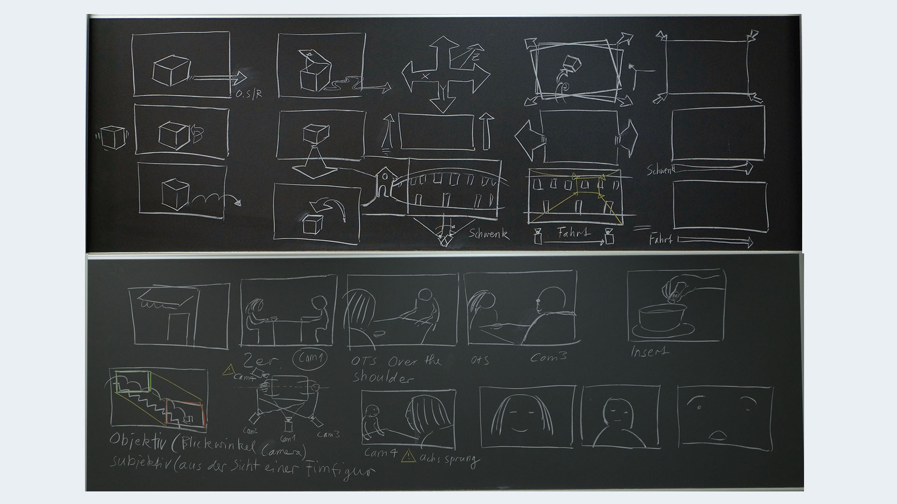

Experimentelles Erzählen
Wir starteten mit einer originellen Vorstellungsrunde. Jeder schrieb seinen Namen und einen Hinweis auf ein Papier. Man setzte sich alleine vor die Klasse, als wäre man ein Bild mit Kommentar im Internet und die Klasse musste dann werweisen, was dahinter steckt.
Was mir da noch nicht so bewusst war: Das war bereits der erste Schritt, sich an dieses Fach heranzutasten. So richtig etwas darunter vorstellen konnten sich nämlich die wenigsten.
Die Diashow
Es wurde uns die folgene Aufgabe erteilt: Wir sollen uns in Gruppen aufteilen und jeweils eine Person mit verbundenen Augen an verschiedene Orte führen. Am jeweiligen Ort angekommen, musste die Person die Augen öffnen und auf ein Dia zeichnen, was er oder sie sah. Abwechslungsweise setzten wir diesen Teil der Aufgabe um. Die einzelnen Sujets, die sich aus dieser Methodik ergeben hatten, sollten wir nun miteinander kombinieren und so zu einer Geschichte formen.
Wir schrieben also eine Story dazu und präsentierten diese am Schluss den anderem Klassenmitgliedern. Zwei andere Gruppen erstellten jeweils ebenfalls eine Geschichte zu den gleichen Dias und präsentierten diese dann anschliessend. Es war lustig und interessant zugleich, wie unterschiedlich die Sujets interpretiert wurden.
 





Nun machte das Ganze schon etwas mehr Sinn. Kurz gesagt, sollten wir also lernen, auf eine kreative Art und weise etwas zu erzählen.
Verästelungsgeschichten
Wir haben verschiedenen Beispiele zu diesem Thema angeschaut und uns Gedanken dazu gemacht, wie man eine solche Verästelung sonst noch einsetzen könnte.
Vereinfacht gesagt, handelt es sich hierbei um eine Geschichte, die man mit gewissen Entscheidungspunkten beeinflussen kann. Es gibt also im Verlaufe der Geschichte immer wieder Entscheidungsmomente, wo man Einfluss darauf hat, wie die Story weitergeht. Dies kann eine klassische geschriebene Geschichte sein, ein Film oder etwas komplett anderes. Eine der neusten Beispiele dazu wäre z.B. die Netflix Produktion «Bandersnatch».
Auf das nächste Mal sollten wir uns überlegen, was wir selbst gerne als Experimentelle Erzählung umsetzen würden.
Erfinde ein Minigame
Wir wurden in Gruppen aufgeteilt. Jede Gruppe erhielt ein paar skurrile Zeitungsartikel. Man sollte sich für einen Artikel entscheiden und aus diesem dann die Idee für ein Minigame schöpfen.
Wir hatten uns für die Geschichte entschieden, bei der gefrässige Ratten das Geld in einem Bankomaten auffrassen.

Dieses funktioniert wie folgt:
- Hauptfigur: Personen, die am Automaten Geld beziehen und Ratten, die das Geld fressen.
- Ziel des Spieles: Wer am meisten Geld aus dem Automaten holen kann, hat gewonnen.
- Game over: Wenn einem Spieler das Geld ausgeht.
- Spielende: Wenn die Bank kein Geld mehr hat.
- Spielmechanismus: Brettspiel, mit Würfel, Figuren und Karten mit Aktionen.
Regeln
Durch Würfeln kommt man voran und es gibt verschiedene Felder:
- Rattenfeld: Auf diesem Feld bekommt man kein Geld.
- Du musst eine Karte aufnehmen, darauf steht eine Aktion wie z.B.: «Du musst eine Runde aussetzen, weil du deinen Pincode vergessen hast.» oder «Du bekommst Zinsen von der Bank.»
- Wenn du Geld beziehst, gibt es ganzes und angefressenes Geld. Dieses wird vermischt auf einen Stapel gelegt.
Dramaturgie
Verschiedene Erzählformen
- Spannung / Überraschung
- Vorankündigung
- Geben und nehmen (z.B. Hans im Glück)
- Sähen und Ernten
- Showdown (abschliessender Machtkampf)
- Erwartungshaltung erzeugen und brechen
- Varianten, Repetition
- Andere Ebene der Erzählung (z.B. Traumsequenz)
- Ziel (z.B. Mission) und Wunsch (z.B. Klavier spielen)
- Exposition
- Wendepunkt (Plotpoint)
- Konflikt (Gegenspieler: z.B. innerer Konflikt {Hauptfigur selbst}, Natur oder Umfeld)
- Auflösung (Schluss)

Epische Geschichte
- Erzählerisch, erzählend, berichtend
- Auch mit Episoden verbunden
- Protagonist kann auch sterben, Geschichte geht aber trotzdem weiter
Ensembel Geschichte
- Who done it (z.B. Krimi)
- Schritt für Schritt eine Enthüllung der Geschichte
Heldenfigur erfinden
Die Aufgabe lautete: Erfinde eine Heldenfigur und beschreibe die Eigenschaften Name, Alter, Geschlecht, Lebenslauf, Umfeld, Gegenspieler, Freunde, evtl. Tier, Schwachstellen, Gwohnheiten und Macke.
Nachdem jede Gruppe diesen Teil umgesetzt hatte, wurde der Steckbrief sowie auch die Zeichnung der Figur weitergegeben und man musste zeichnen, was man las oder beschreiben, was man sah. Daraus entstanden die unterschiedlichsten Ergebnisse.
Storyboard
Definition Storyboard: Skizzierung einzelner Szenen für einen Film
Beispiele von Storyboards: Höhenfeuer, Wallace & Gromit, Chicken run usw.
Es gibt verschiedene Möglichkeiten eine Szene abzubilden:
Entweder die Kamera bewegt sich oder der Protagonist positioniert sich neu. Dementsprechend verändert sich der Bildausschnitt. Mit Pfeilen kann man gut eine Bewegung oder eine Kameraeinstellung andeuten. Spielt die Kamera eine wichtige Rolle, muss diese am Rande der Szene im richtigen Winkel eingezeichnet werden. Nachfolgend eine Visualisierung dazu:
